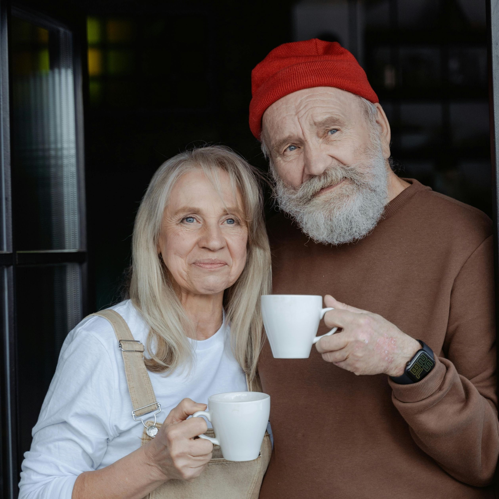
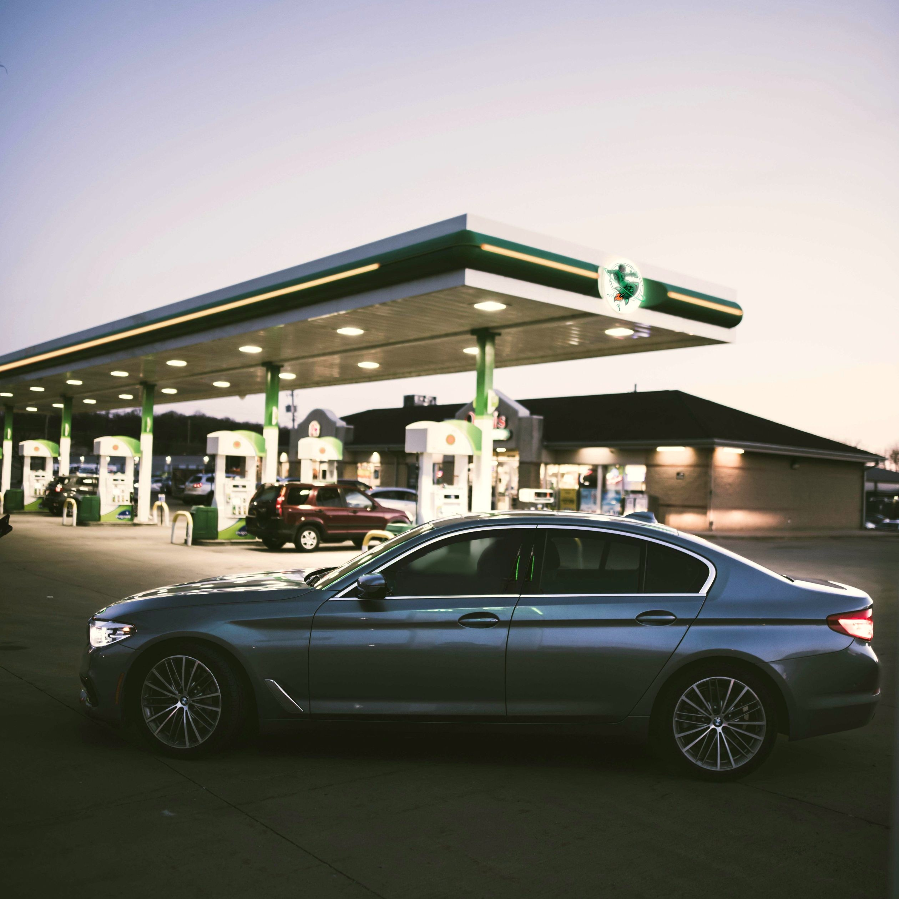
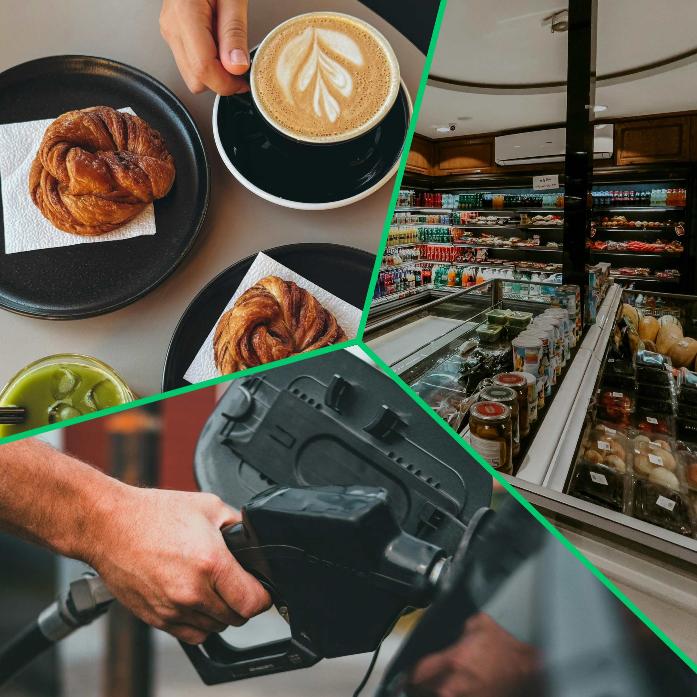
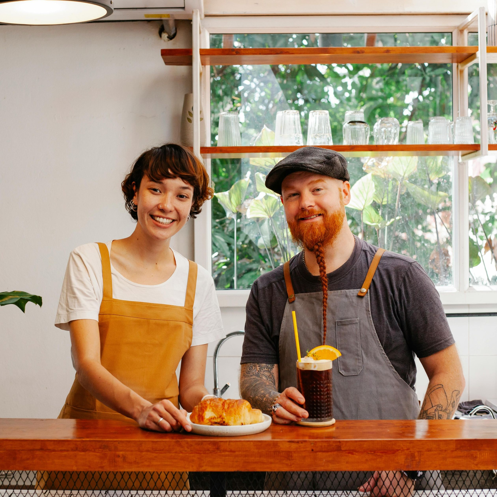

About
The Barrets

Over their many years in the trucking industry, Richard and Linda Barret learned exactly what makes a roadside stop truly stand out. When they stepped away from the industry, they wanted to take that experience and build something that would support the community they loved so much. They believed the best gas stations were the ones that went beyond the basics — the ones that cared about fueling the person just as much as the vehicle. Rocket Fuel Coffee Co. was built on that principle, offering a place where travelers, commuters, and truckers can find comfort, good coffee, and genuine service around the clock.
Mission
Full Service
Station

Our mission is to fuel both the journey and the traveler by providing quality coffee, reliable fuel, and friendly service 24 hours a day to the Spring community and everyone passing through.
Community
Cornerstone
Our vision is to grow into a community cornerstone where locals and travelers alike know they can always find great coffee, dependable fuel, and a friendly face.
Quality &
Reliability

Our goal is to maintain high standards of quality in our coffee, fuel, and convenience offerings, giving customers a dependable stop they can count on day or night.

A stop that matters
Rocket Fuel Coffee Co. was built on the belief that every traveler deserves a place that cares about their journey. Richard and Linda’s experience shaped a stop where good coffee, dependable fuel, and genuine service come first. Whether you’re a local or just passing through, we’re here day and night to help you refuel, recharge, and keep moving.